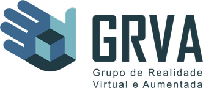
UFU · GRVA · pesquisa e desenvolvimento · desde 2026
GRVA — Grupo de Realidade Virtual e Aumentada
Adquirindo expertise nas áreas de treinamento de robôs por aprendizagem por reforço, usando NVIDIA Isaac Sim, Isaac Lab e MuJoCo.
Engenharia de Computação com Inteligência Artificial
Estudante de Engenharia de Computação na UFU, em Uberlândia. Trabalho com simulação, realidade virtual e aprendizagem de máquina: do treinamento de robôs por reforço a ambientes 3D para o ensino. Desde o ensino médio, também com desenvolvimento web e design.
Trabalho

UFU · GRVA · pesquisa e desenvolvimento · desde 2026
GRVA — Grupo de Realidade Virtual e Aumentada
Adquirindo expertise nas áreas de treinamento de robôs por aprendizagem por reforço, usando NVIDIA Isaac Sim, Isaac Lab e MuJoCo.
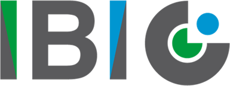
IBI · projeto · abril de 2026 · São Paulo, SP
Instituto Brasileiro de Infraestrutura
Simulação da terceira via para o transporte rodoviário por Cubatão e Santos, concluída em um mês e apresentada na Câmara dos Deputados Federais de São Paulo.
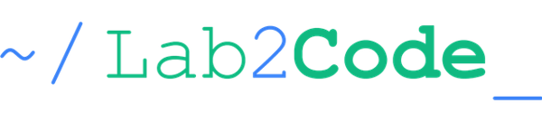
Lab2Code · processos e inovação para o setor público · Brasília
Lab2Code
Colaborador em projetos e pesquisas para o setor elétrico e em problemas de instituições e agências nacionais.
Projetos
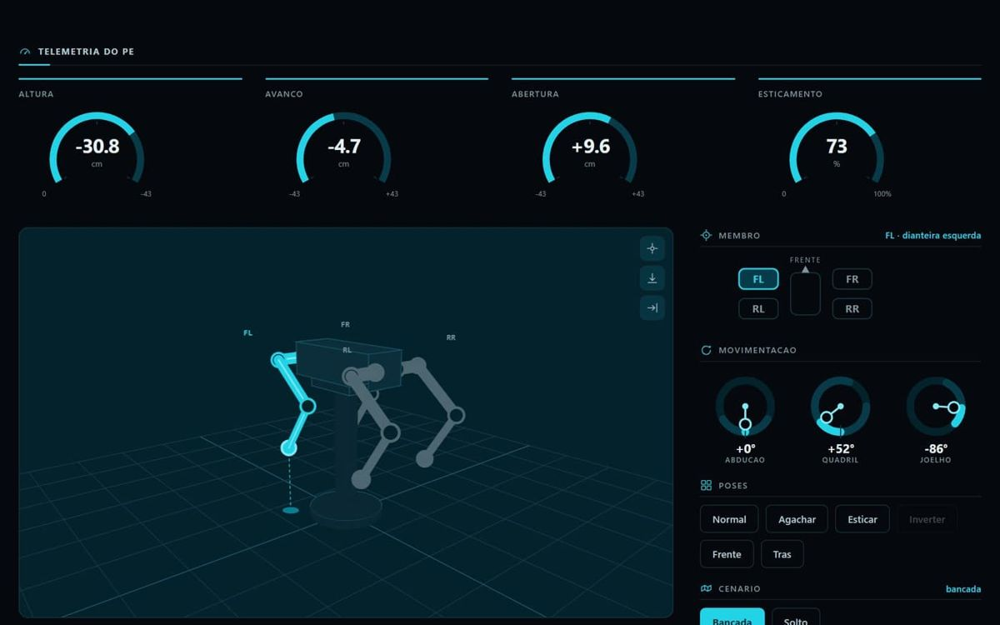
Robótica · IA
Dashboard de aprendizado por reforço
Painel interativo dos dados que o simulador exibe durante o treinamento de um robô: acertos, falhas e o andamento do aprendizado por reforço.
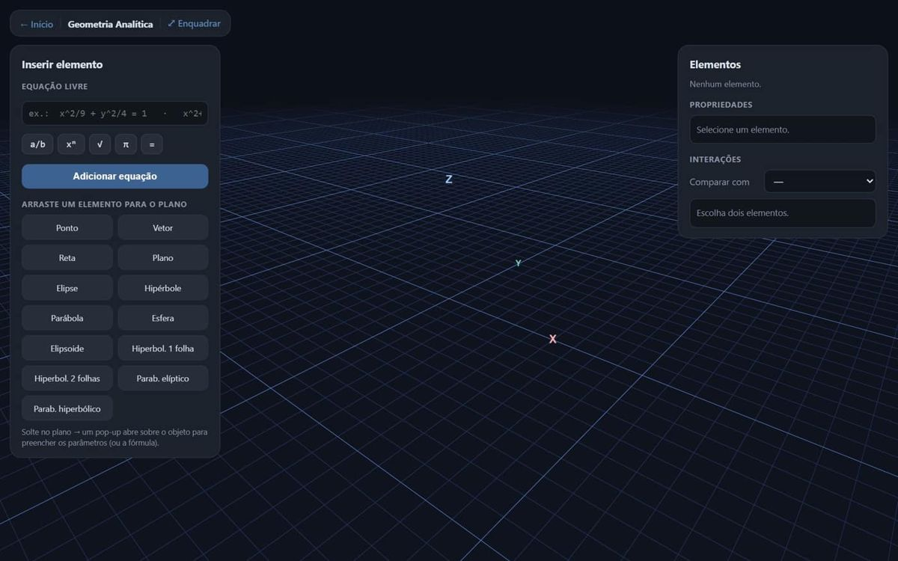
Educação · 3D
Geopsics — ambiente 3D de estudo
Ambiente virtual em 3D para estudar geometria analítica e física mecânica no navegador: pontos, vetores, planos, cônicas e quádricas, com modo AR sobre marcador.
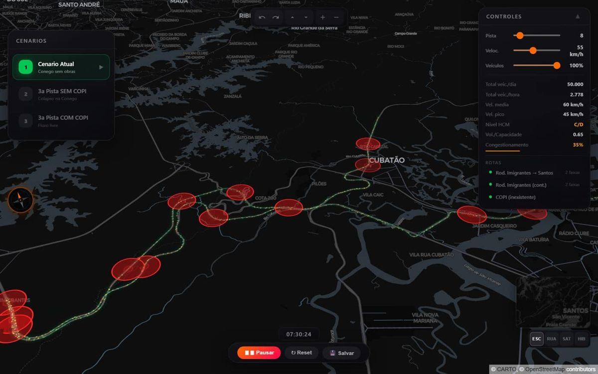
Simulação
Simulação de tráfego — Cubatão / Santos
Tráfego entre a Imigrantes e Santos em três cenários lado a lado: sem obras, com a terceira pista sem o COPI e com ela. Congestionamento, nível de serviço HCM e volume por capacidade em tempo real.
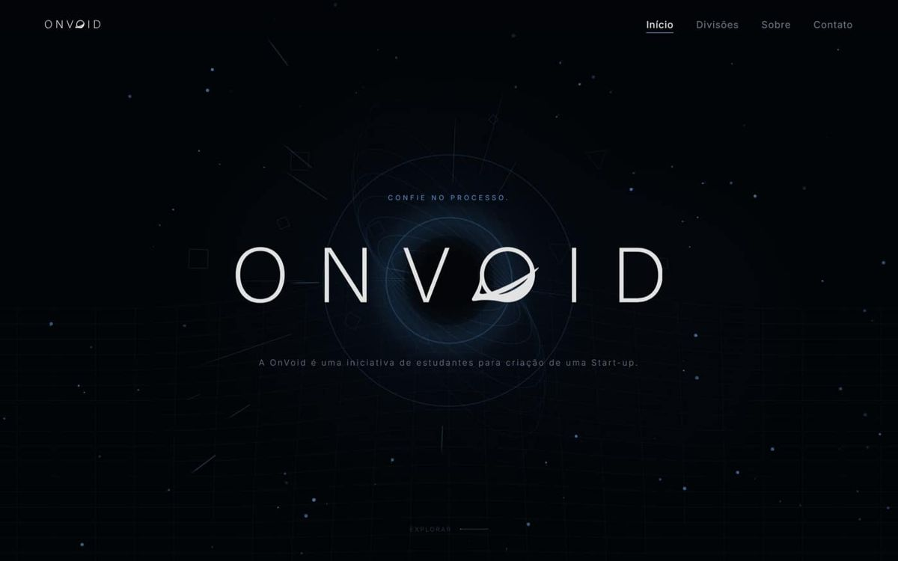
Web
ONVOID — site institucional
Landing page estática da ONVOID, com animações de rolagem, vídeo de fundo e gráficos vetoriais próprios.
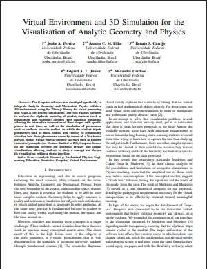
Virtual Environment and 3D Simulation for the Visualization of Analytic Geometry and PhysicsSVR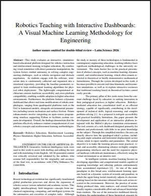
Robotics Teaching with Interactive Dashboards: A Visual Machine Learning Methodology for EngineeringLatinoWare 2026 — em avaliação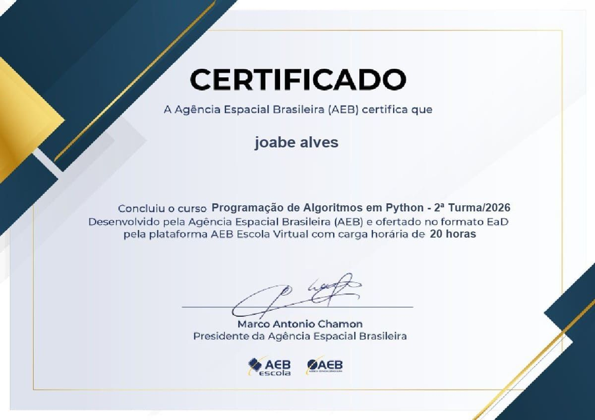
Programação de Algoritmos em PythonAgência Espacial Brasileira (AEB) · 2026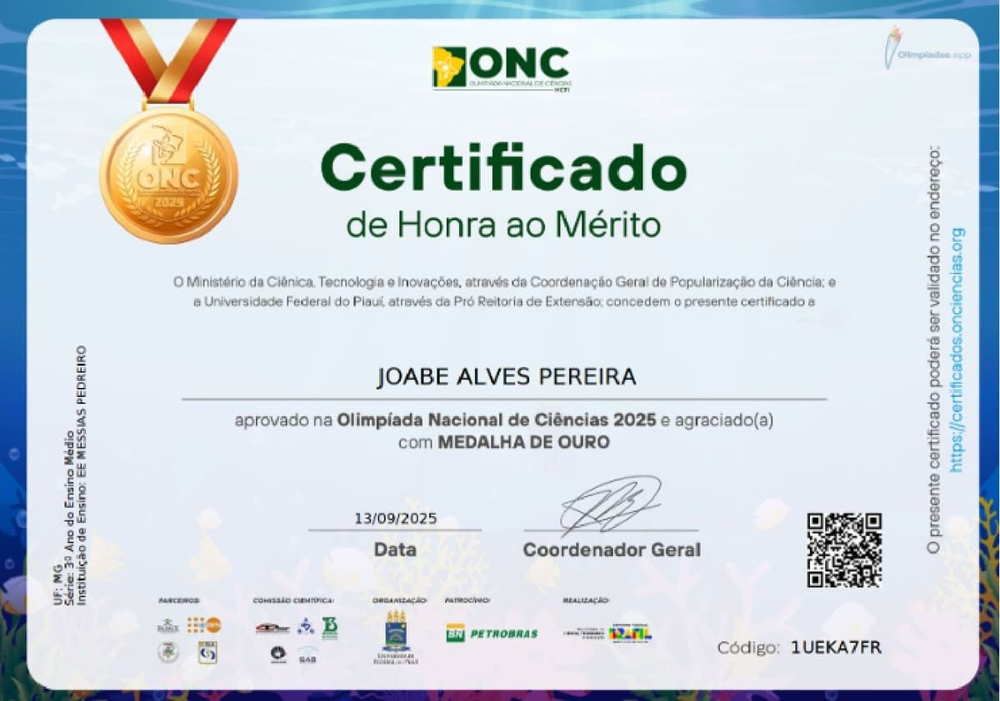
Olimpíada Nacional de Ciências 2025 — Medalha de ouroONC · MCTI e UFPI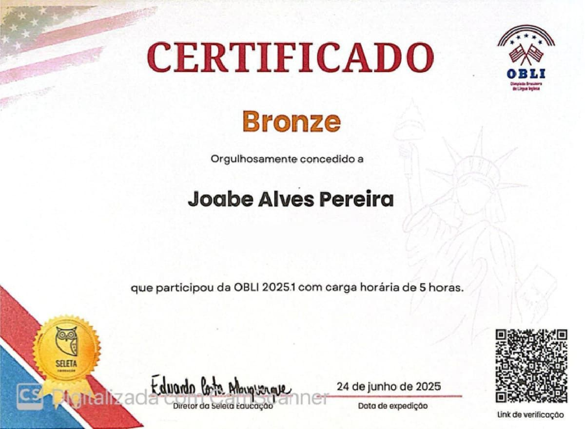
Olimpíada Brasileira de Língua Inglesa 2025.1 — BronzeSeleta Educação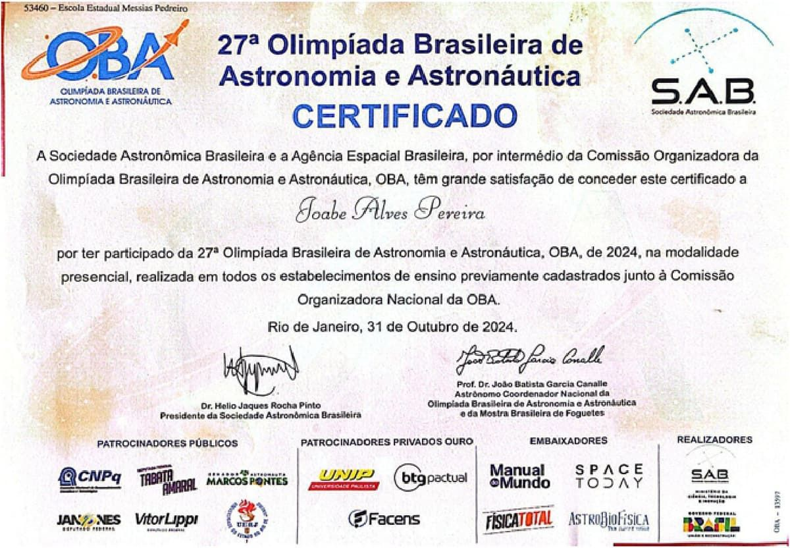
Olimpíada Brasileira de Astronomia e Astronáutica · 2×SAB e AEB · 2024 e 2025© 2026 Joabe Alves · Uberlândia · Cenários 3D: “Sci Fi Spacestation Corridor”, de Siamak Tavakoli, e “Sci-Fi Space Room Interior”, de Paul (CC BY 4.0)